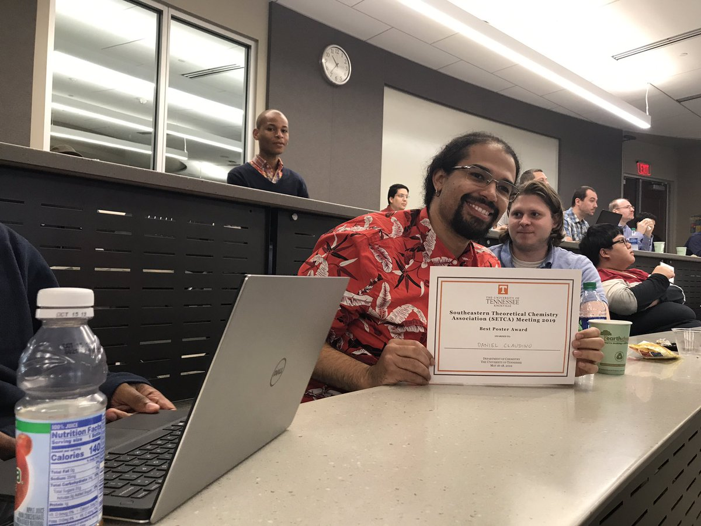
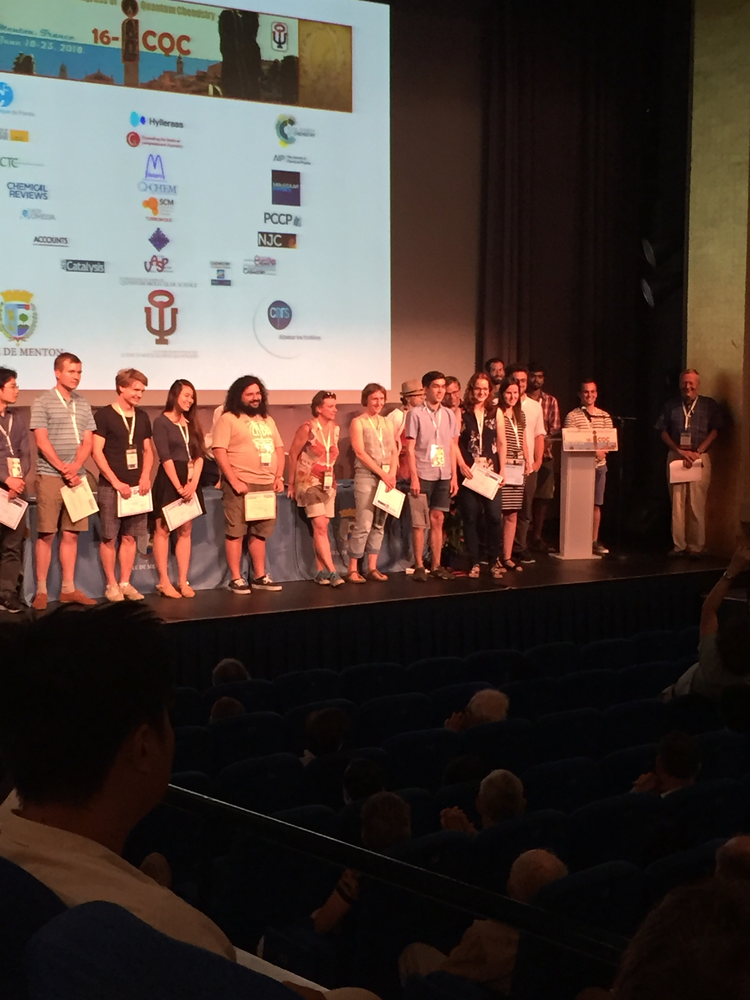

- July 16, 2019
Welcome Nicole who will be developing fragment-based approaches to model spin qubits!
- May 18, 2019
Daniel won a poster award at the 2019 SETCA meeting! Congrats!

- May 1, 2019:
Shannon got selected for a summer internship at QChem to implement her Fock-space CI methods! Have fun - congrats!!
- March 25, 2019
Welcome to our newest postdoc Oinam who will be implementing SOC into the Fock-space CI methods and working on transmon simulations!
- Dec 6, 2018
A very warm welcome to two new grad students Harper and Richard, and one new undergrad, Robert!
- Nov 2, 2018
Isaiah Sumner visited us to share his work on the Bohmian mechanics of molecular orbitals - really fun!
- Sept 25, 2018
Two new projects have been funded to simulate strongly correlated molecules on quantum computers! Both of these are joint projects with our fantastic collaborators: Sophia Economou (VT Physics), Ed Barnes (VT Physics), and Dave Pappas (NIST/CU Boulder). Both graduate student and postdoc (apply here: link) positions available! Thanks, NSF and DOE!!
- Sept 21, 2018
Congratulations to Shannon for getting an invited talk at the upcoming ACS meeting in Orlando!! Awesome!
- Jun 24, 2018
Congratulations to Vibin for winning a JCP poster award at ICQC in Menton, France!! His poster was on using tensor decompositions with perturbation theory for strongly correlated systems. Great work!

- Feb 13, 2018
We are very grateful to have received the NSF CAREER award! Thanks, NSF! link
- Oct. 24, 2017
Congrats to Vibin for getting his first publication entitled ``A Simple Rule to Predict Boundedness of Multi-Exciton States in Covalently-Linked Singlet Fission Dimers '' accepted! link
- Sept. 1, 2017
Thanks to the DOE for funding our work into developing new quantum chemistry methods for modelling single-molecule magnets for use in quantum computing devices!
- Aug. 22, 2017
Go check out our new publication on using the Tucker decomposition to model cluster states link
- July 1, 2017
Welcome to the group Sean!
- Nov. 17, 2016
The group is excited to welcome two new graduate students, Shannon and Vibin!
- Jul. 29, 2016
Our paper entitled "From model Hamiltonians to ab initio Hamiltonians and back again: Using single excitation quantum chemistry methods to find multiexciton states in singlet fission materials" was accepted for publication in JCTC: link
- May. 20, 2016
Interested in doing cool stuff with electrons? We are too! Check out our postdoc position on the CCL: link
- Jan. 4, 2016
A warm welcome to Shaunak who joins the group with an ambitious plan to simultaneously simulate and synthesize Metal-Organic Frameworks for new energy applications!
- Sept. 7, 2015
Welcome to the new site! We are delighted to be setting up shop here at Virginia Tech. Our website is currently under development and will soon contain much more information. Check back soon!